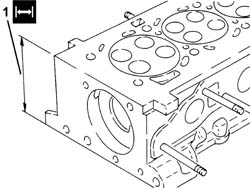

1016E38 SINGLE CYLINDER HEAD OR (ONE) LEFT OR RIGHT, REMOVED - GRINDING
- Path
- Procedures > 10 ENGINE > 1016 CYLINDER HEAD/S > 1016E CYLINDER HEAD/S - VARIOUS OPERATIONS > 1016E38 SINGLE CYLINDER HEAD OR (ONE) LEFT OR RIGHT, REMOVED - GRINDING
- Kind
- repair procedure (removal / refitting; the operation number is the code)
- Applies to
- engines: 2.2 JTS, 2.4 JTD 20v; all production periods
- Interactive page
- https://sloeber94.github.io/elrnDB-aBrrSpdr/en/#/946001830
Applies to: engines: 2.2 JTS; all production periods
Applies to: engines: 2.4 JTD 20v; all production periods
Check that the flatness of the lower cylinder head plane corresponds to the recommended values.
Subject | Value | |
|---|---|---|
. | Engine cylinder head | mm |
- | Lower plane planarity | < 0.1 |
1. If lower surface flatness of the lower cylinder head is not within specified values, grind from the nominal head height and then fit a new gasket with the number of notches determined as described below.
- The head can be refaced by 0.1 mm if a gasket with 0 references was fitted and a new gasket with 1 reference is going to be used. The head can be refaced by 0.2 mm if a gasket with 0 references was fitted and a new gasket with 2 references is going to be used. The head can be refaced by 0.1 mm if a gasket with 1 reference was fitted and a new gasket with 2 references is going to be used.
Subject | Value | |
|---|---|---|
. | Engine cylinder head | mm |
1 | Minimum permitted height | 107±0,05 |
